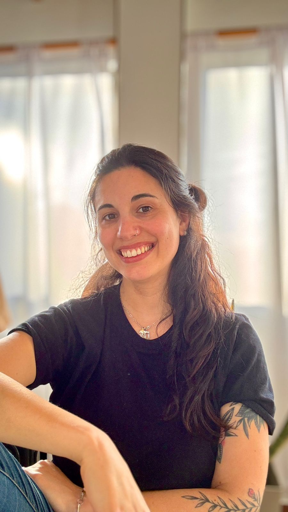

Estar ahí
Trabajo situado: conocer cómo funciona realmente la institución antes de decidir qué necesita.
DE LA EXPERIENCIA EN EL AULA A LA INNOVACIÓN
Soy Lucía Snieg. Trabajo entre educación, accesibilidad y tecnología, pensando propuestas que partan de las personas, los equipos y las realidades concretas.
¿POR DÓNDE QUERÉS SEGUIR?
NÓMADE
Desarrollo de apps, sistemas, webs y herramientas digitales a medida para instituciones, equipos y proyectos.
Entrar a NÓMADEACOMPAÑAMIENTO
Un espacio para personas con discapacidad y familias que necesitan pensar proyectos, apoyos y nuevas posibilidades.
Conocer la propuestaESCRITOS
Un espacio para textos sobre educación, discapacidad, tecnología, accesibilidad y todo lo que aparece entre medio.
Leer escritosY DETRÁS DE TODO ESTO, ESTOY YO

Soy Lucía Snieg. Profesora (Raspanti), Licenciada en Educación Especial (UNSAM) y Maestranda en Procesos Educativos mediados por Tecnologías (UNC).
Mi recorrido se construyó en la intersección entre educación, salud y gestión. Soy docente y trabajo en instituciones. Pasé por aulas, equipos, centros de día, espacios de gestión y el INFoD. Sé lo que implica sostener una institución, coordinar equipos y resolver todos esos pequeños problemas que aparecen todos los días.
También trabajo desde la accesibilidad. No solamente pensando en barreras físicas o comunicacionales, sino en algo que muchas veces queda olvidado: la accesibilidad cognitiva. Interfaces sencillas, recorridos intuitivos, información clara y herramientas que puedan comprender y usar la mayor cantidad de personas posible. Porque la inclusión también se construye en la manera en que diseñamos una pantalla, un formulario o un sistema.
Lucía
CÓMO SURGE NÓMADE
Nómade nace de mi trabajo en instituciones y de una pregunta que apareció una y otra vez: ¿por qué tenemos que acomodarnos nosotras/os a herramientas que fueron pensadas para una realidad completamente distinta? Acompaño a instituciones educativas, terapéuticas y de salud, organizaciones sociales, equipos y emprendimientos a pensar y construir herramientas que se amolden a su manera real de trabajar.
Nace de haber estado y seguir estando ahí: en aulas, instituciones, equipos docentes y espacios de gestión. Sé que detrás de cada registro, cada planilla y cada sistema hay personas que están haciendo lo mejor que pueden para que todo funcione. Mi propuesta es que la tecnología acompañe ese trabajo, en lugar de agregar otra dificultad.
Trabajo situado: conocer cómo funciona realmente la institución antes de decidir qué necesita.
Los sistemas se amoldan a las instituciones. No las instituciones a los sistemas.
Accesibilidad física, comunicacional y, especialmente, cognitiva: interfaces sencillas e intuitivas para todas y todos.
UNA IDEA QUE GUÍA TODO
“Las herramientas tienen que amoldarse a las instituciones.NÓMADE
No las instituciones a las herramientas.”
PREGUNTAS
Trabajo con escuelas, Educación Especial, centros terapéuticos, centros de día, consultorios interdisciplinarios, organizaciones, proyectos autogestivos, ONG y emprendimientos. Si tu proyecto necesita ordenar, comunicar, simplificar o hacer más accesible alguna parte de su trabajo, podemos conversarlo.
Sí. No hace falta cambiar todo de una vez. Podemos empezar por ese problema concreto que hoy más tiempo, esfuerzo o dolores de cabeza te lleva.
Mejor todavía: las vemos. No siempre hace falta reemplazar lo que ya existe. Muchas veces podemos ordenar, mejorar o conectar herramientas que el equipo ya conoce.
Depende del tipo de acompañamiento. Trabajo de forma virtual y también puedo realizar propuestas presenciales. En el caso de la asesoría para personas con discapacidad y familias, atiendo presencialmente en Ramos Mejía Centro.
Sí. Acompaño procesos de accesibilidad considerando barreras físicas, comunicacionales y cognitivas, además de trabajar con dispositivos y apoyos accesibles e interfaces sencillas e intuitivas.
No. De hecho, muchas veces empezamos justamente antes de eso. Me contás qué está pasando y pensamos juntas/os por dónde tiene sentido empezar.
Escribime por WhatsApp y contame qué necesitás, qué estás pensando o qué situación querés conversar. A partir de ahí vemos cuál de los caminos tiene más sentido.
EMPECEMOS POR DONDE TENGA SENTIDO
No hace falta que sepas exactamente qué necesitás. Contame qué estás pensando y vemos juntas/os por dónde seguir.